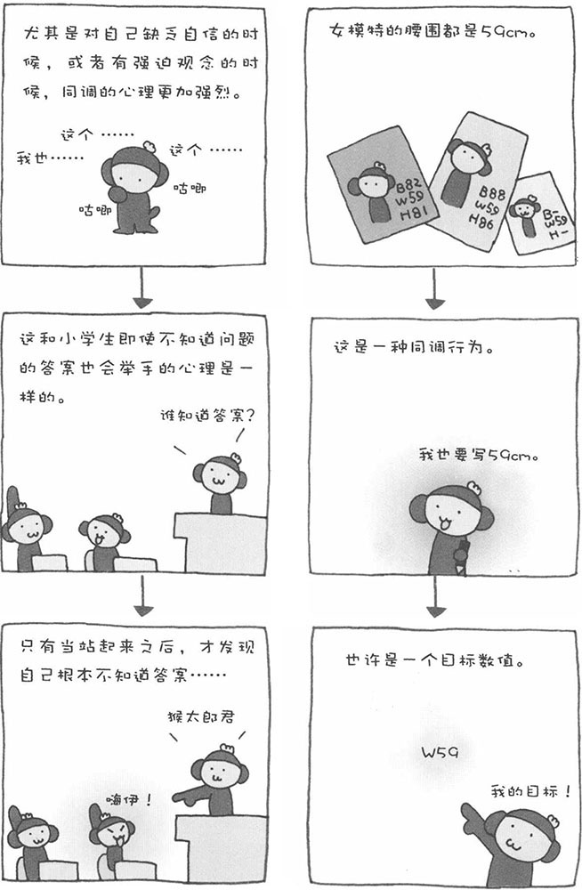

在各种行业中，都有一些默认的、共通的尺寸。比如，公司、企业使用的文件纸都是A4的，在日本易拉罐饮料多是350ml的，这样的例子不胜枚举。在时装模特界，也存在这样的尺寸。如果您仔细研究一下女模特们的宣传资料，就会发现大部分女模特的腰围都是59cm。在这个个性张扬的现代社会，女模特的腰围却出奇地保持着高度一致——都是59cm，这是为什么呢？在女模特的世界中，腰围保持在50多厘米已经成为一种默认的惯例。即使模特的实际腰围为W63或W65，在填写资料的时候，她们也会写成W59。
这是一种同调行为。虽然心里清楚自己在说谎，但宁愿说谎也不想和别人不同。如果脱离了大多数，会让人产生不安感，尤其是对自己缺乏自信的时候，这种心理效应会更加显着。很多女性对自己的体型抱有自卑感，或者说是有心结的。因此，一提到体型，大家都采取同调行为，即尽量使自己与众人保持一致，以免暴露自己的缺点。这是女性所特有的心理活动。
不过，女性为什么都要把腰围保持在50多厘米呢？我还不太清楚其中的原因。也许是因为这样看起来漂亮，又或者是因为对美丽体型有一种信仰。有趣的是，心理学界也对女性的体型展开了研究。海外的心理学家通过实验，研究男性最喜欢的女性体型。结果表明，当女性的腰围与臀围的比例为0.7的时候，最受男性的青睐。也就上说，如果腰围是W59，那么臀围就应该是H84。由此看来，只保持纤细的腰身还不行，必须要比例协调才能赢得男士的喜欢。再说一句，其实男性对女性体型的数字不太敏感，没有哪个男性看到女性体型的数字就兴奋起来的（如果真有这样的男性，那也怪恐怖的）。只有看到女性真实的体型，并且其腰围与臀围的比例接近0.7的时候，才是最令男士动心的。
尤其是对自己缺乏自信的时候，或者有强迫观念的时候，同调的心理更加强烈。
